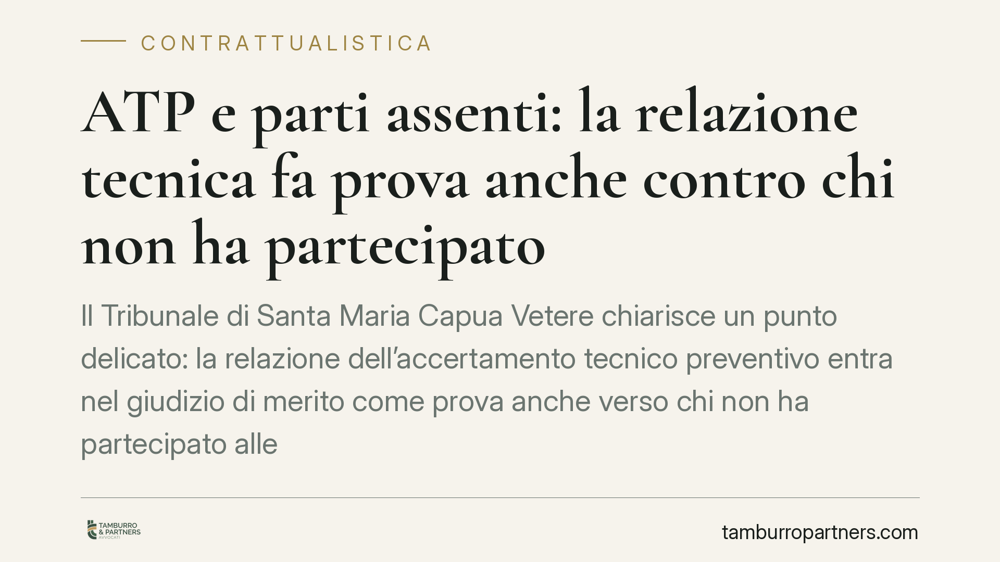

ATP e parti assenti: la relazione tecnica fa prova anche contro chi non ha partecipato
Il Tribunale di Santa Maria Capua Vetere chiarisce un punto delicato: la relazione dell'accertamento tecnico preventivo entra nel giudizio di merito come prova anche verso chi non ha partecipato alle operazioni peritali. Un principio con ricadute concrete in materia di danni da immobili, appalti e responsabilità condominiali, dove spesso compaiono più soggetti e la compagnia chiamata in manleva.

Il caso
Il Tribunale di Santa Maria Capua Vetere, Sezione I, è tornato sul valore probatorio dell'accertamento tecnico preventivo (ATP), lo strumento che consente di "cristallizzare" lo stato dei luoghi o le cause di un danno prima e al di fuori del processo di merito.
La questione pratica è ricorrente: cosa accade quando la relazione del consulente viene poi prodotta nel giudizio ordinario e una delle parti sostiene di non aver partecipato alle operazioni peritali? Può quella parte dirsi estranea alle risultanze tecniche?
La risposta del Tribunale è netta: la relazione è utilizzabile come prova atipica nel giudizio di merito anche nei confronti delle parti rimaste assenti. Non può valere "a geometria variabile", cioè per alcuni soggetti sì e per altri no.
Inquadramento normativo
L'accertamento tecnico preventivo è disciplinato dall'art. 696 c.p.c., che consente di far verificare lo stato di luoghi o la qualità e condizione di cose quando vi è urgenza. L'art. 696-bis c.p.c. introduce una variante con finalità anche conciliativa, utilizzabile pure in assenza di urgenza.
Il punto decisivo riguarda però l'efficacia probatoria. La relazione dell'ATP non ha, di per sé, il valore di una consulenza tecnica d'ufficio disposta nel merito. Entra però nel processo come "prova atipica": un elemento che il giudice può liberamente valutare ai sensi dell'art. 116 c.p.c., secondo il principio del prudente apprezzamento.
Proprio perché si tratta di libera valutazione, il giudice non è vincolato alle conclusioni del consulente e la parte che non ha partecipato conserva pieni strumenti di difesa: può contestare la relazione nel merito e può chiedere una nuova consulenza tecnica d'ufficio in giudizio.
Implicazioni pratiche
Il principio affermato ha un peso notevole nei contenziosi che ruotano attorno agli immobili.
Pensiamo alle infiltrazioni condominiali, ai difetti costruttivi contestati all'impresa appaltatrice, ai danni da esecuzione di lavori. Qui gli attori sono spesso molteplici: il condomino danneggiato, il condominio, l'appaltatore, e frequentemente la compagnia assicurativa chiamata a tenere indenne uno di questi soggetti (la cosiddetta manleva).
La pronuncia precisa che la relazione non può valere solo contro chi era presente e restare inopponibile a chi era assente, come l'assicurazione estranea alla fase preventiva. Un risultato tecnico sulle cause del danno non può cambiare natura a seconda del destinatario.
Per chi agisce, significa che l'ATP ben condotto conserva efficacia anche verso soggetti sopravvenuti o non costituiti nella fase preventiva. Per chi si difende, significa che l'assenza alle operazioni non è uno scudo: è invece l'onere di attivarsi nel merito per contestare o chiedere l'approfondimento peritale.
Il rovescio della medaglia riguarda la qualità dell'ATP stesso. Se la relazione è destinata a produrre effetti anche verso terzi, diventa ancora più importante curarne la regolarità procedurale e tecnica: dalla corretta instaurazione del contraddittorio alla precisione dei quesiti.
Il ruolo della prova atipica
Va colto un equilibrio. La qualificazione come prova atipica non trasforma l'ATP in un verdetto definitivo sulle responsabilità. Serve a fotografare fatti tecnici, non a decidere la lite.
La parte che ritiene errata o parziale la relazione non è priva di tutela: deve però tradurre le proprie obiezioni in contestazioni argomentate e, se necessario, in una richiesta di CTU nel merito. Il silenzio o la generica contestazione rischiano di lasciare le risultanze peritali prive di reale contraddittorio, con un risultato processuale sfavorevole.
Cosa fare in concreto
- Partecipate sempre alle operazioni di ATP se ne ricevete comunicazione: l'assenza non neutralizza la relazione, ma vi priva del contraddittorio tecnico nel momento in cui conta di più.
- Nominate un consulente tecnico di parte per presidiare le verifiche peritali e documentare osservazioni e riserve a verbale.
- In caso di assenza alla fase preventiva, attivatevi nel merito: contestate puntualmente le conclusioni e, ove opportuno, chiedete una nuova CTU.
- Verificate le posizioni assicurative prima dell'ATP: coinvolgete tempestivamente la compagnia tenuta alla manleva, così da renderla parte delle operazioni.
- Conservate ogni documentazione tecnica (fatture, computi, perizie di parte) utile a sostenere o confutare le risultanze del consulente.
---
Contributo informativo a cura di Tamburro & Partners - Avv. Giuseppe Tamburro. Non costituisce parere legale.
Ogni contratto ha il suo equilibrio.
Se vuoi una revisione delle clausole o una redazione su misura, scrivi allo studio. Ti rispondiamo entro un giorno lavorativo.